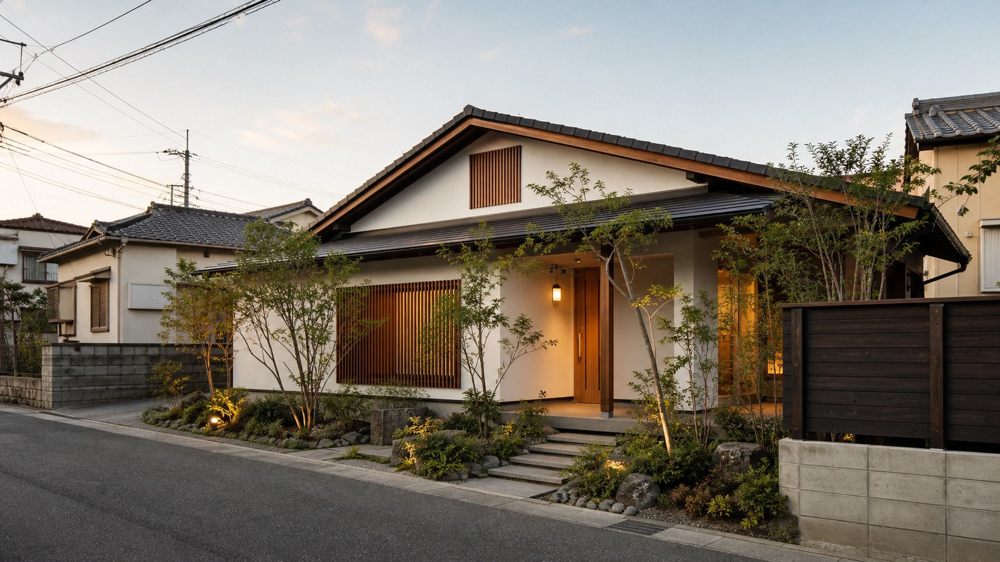
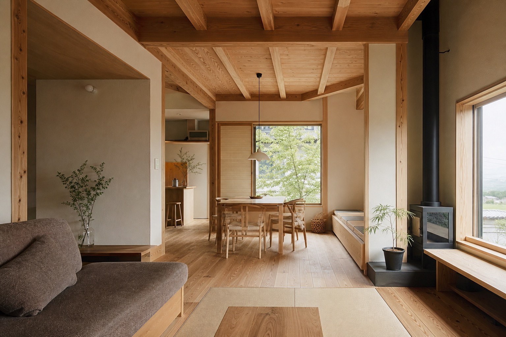
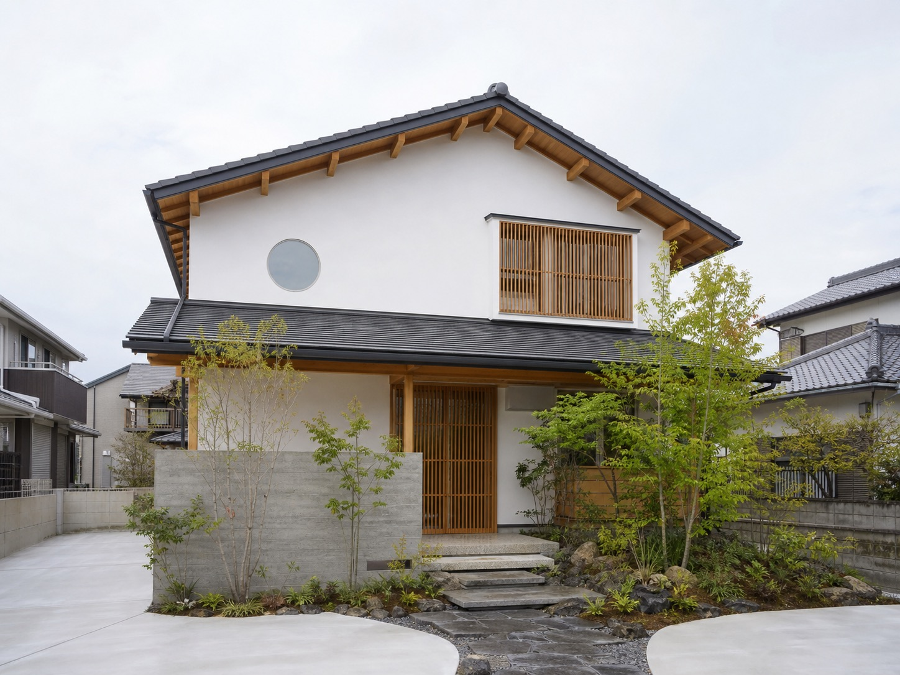
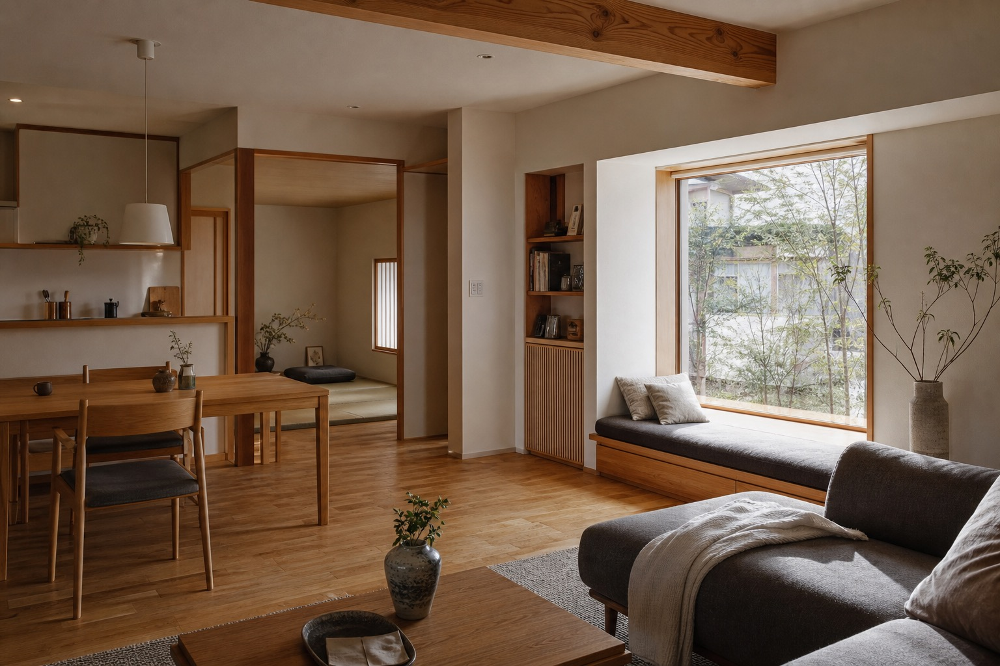
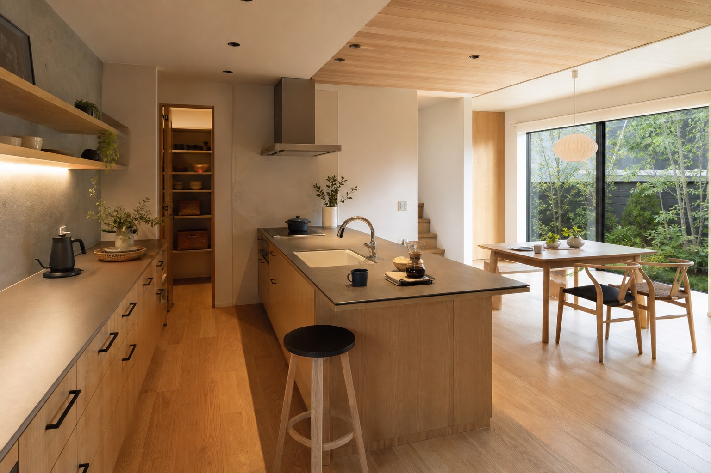

自由設計の家
敷地条件、家族構成、暮らし方、こだわりを聞き取り、一邸ごとに設計する家づくり。

公式サイトで語られているのは、「商品」としての住宅ではなく、住む人の夢を叶える「住空間」としての住宅。広さや予算の制約を理由にあきらめず、提案を重ねる姿勢が吉源工務店らしさです。

確認できたサービスを、営業提案時に見やすい導線へ整理しています。
敷地条件、家族構成、暮らし方、こだわりを聞き取り、一邸ごとに設計する家づくり。
公式サイトに掲載の「新・ぐるの家」など、予算感を把握しやすい住まいの入口。
土地から考える方向けの相談、住宅ローン相談会、資料請求への導線を明確に。
公式施工例で確認できる全面リフォームなど、住まい直しの相談にも対応。
注文住宅だけでなく、鉄骨造3階建ての二世帯＋事務所併用住宅、2階リビング、猫と暮らす家、リフォーム、社屋など、公式施工例から幅広い相談に向き合う姿勢が読み取れます。
下記は差し替え前提の仮画像です。実際の公開時は公式施工写真へ置き換えます。



公式サイトで確認できる施工傾向：鉄骨造3階建て二世帯＋事務所併用住宅、猫と暮らす家、2階リビング、木のぬくもりを感じる家、全面リフォーム、社屋など。
公式サイトには見学会情報、住宅ローン相談会、資料請求、お問い合わせ、Instagram、YouTube、採用情報への導線があります。デモでは、来場前の不安を減らす相談導線として整理しています。
株式会社吉源工務店
庄野崎 源太
福岡市博多区博多駅東2丁目4-15 博多DKビル4階
092-432-5506
yoshimotohouse[at]cure.ocn.ne.jp（表記形式は公開前に要確認）
要確認
福岡市、糸島市、糟屋郡、飯塚市、佐賀市などの施工例を確認。正式な対応範囲は要確認。
完成見学会、資料請求、土地探し、リフォームなど、相談内容に合わせて入口を分けると問い合わせ前の迷いを減らせます。
このフォームは営業提案用サンプルです。実際には送信されません。